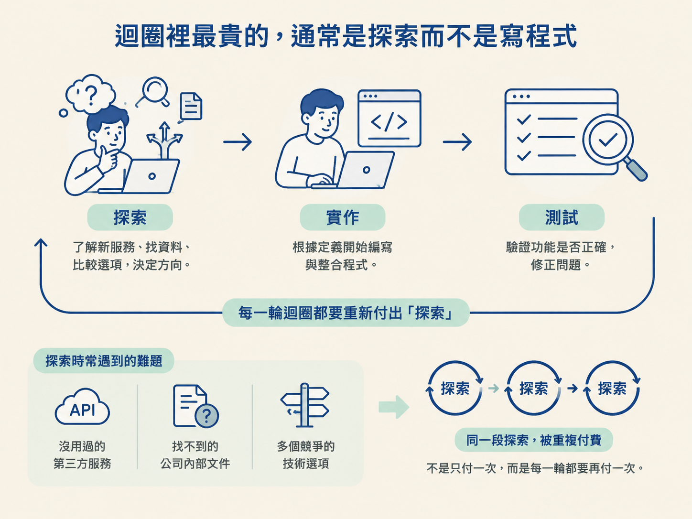
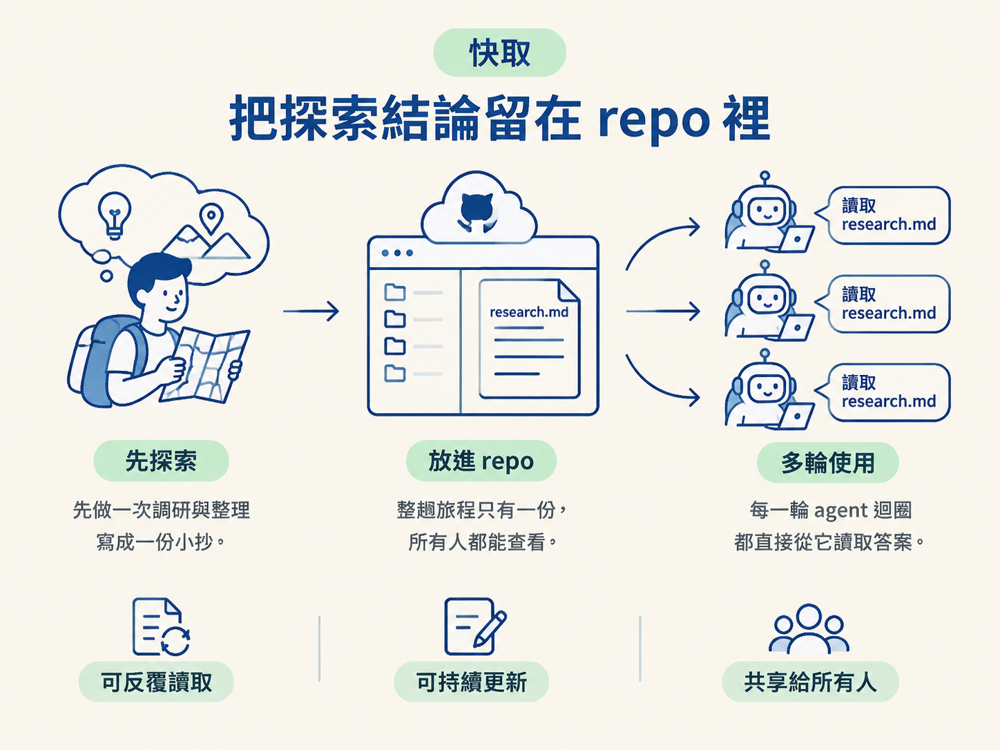
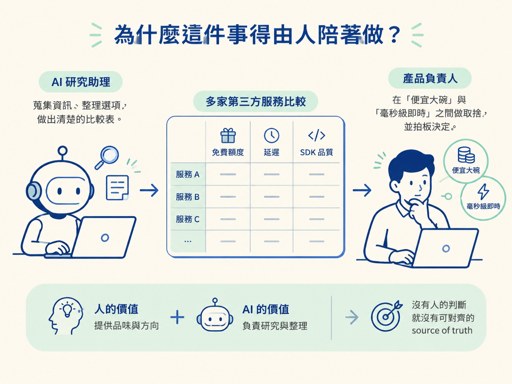

上一節，你把 PRD 拆成一張張帶有 dependency 的 issue，也讓 agent 只挑 AFK 的票來處理。迴圈剛開始運作時，一切看起來都很順：agent 一張接一張地消化任務。
但多跑幾輪後，你可能會發現一件怪事：每一輪開頭，agent 都花了不少時間在「搞清楚怎麼做」，而不是在寫程式。
它重新翻官方文件、搜尋網路範例，還要在幾個服務之間反覆比較。這些摸索本身沒有錯，真正的問題是：每一輪都重新摸索一次。如果同一個技術決策會支撐二十張票，就等於你為同一段探索付了二十次費用。
這一節要談的，就是把探索從迴圈裡搬出去，先做一次，再把結果留在 repo 裡。後面的每一輪直接讀取這份結論，不必從零開始。
你會理解為什麼應該先把昂貴的外部探索做完，再寫成 research.md。這份文件可以省下重複的 token 與探索時間，也能讓後續的 agent 對齊同一套技術決策。
同時，你也會知道為什麼這件事需要由人參與，而不是完全交給 agent 自己決定。
agent 完成一項任務，大致會經過三段：先探索（explore），搞清楚要修改哪些檔案、有哪些現成做法，以及該使用哪個服務；接著是實作（implementation），把 code 寫出來；最後是測試（testing），執行測試並修正問題，直到結果通過。
實作和測試的範圍，通常會在 issue 定義清楚後變得相對穩定。真正容易失控的是探索。
任務一旦牽涉到沒用過的第三方服務、找不到的公司內部文件，或幾個彼此競爭的技術選項，光是回答「到底要做什麼」和「應該走哪一條路」，就可能耗掉大半時間。更麻煩的是，這筆成本不是只付一次，而是每一輪迴圈都會再付一次。

迴圈開得愈多，重複探索的浪費就愈明顯。就像每次煮飯都重新研究怎麼開瓦斯、哪個鍋子導熱比較快；偶爾做一次還好，天天做就很不划算。
探索還有一項不容易察覺的成本：context 是有限的。agent 的上下文視窗就像一張有限大小的工作桌。探索時塞進來的文件、搜尋結果和比較筆記，會把真正重要的實作細節擠到角落。
所以探索不只是讓迴圈變慢，也可能讓 agent 離開適合做判斷與寫程式的 smart zone。
既然探索昂貴，而且很容易重複，直覺的解法就是：先做一次，再把答案存起來。
在正式開跑迴圈前，你可以陪 agent 完整研究一輪，然後把結論寫成 repo 裡的文件。這類文件慣例上可以放在 plans/ 目錄底下，名稱可以是 research.md，也可以像 plans/live-presence-indicator 這樣，直接用主題命名。
之後，每一輪迴圈一開始先讀取這份文件，就等於跳過整段重新摸索的過程。
這很像出國自由行前先做功課。你不會每抵達一個城市，才臨時開始查交通、比較住宿、研究票券；通常會在家先整理好「機場到市區搭哪條線」以及「哪張票比較划算」，把結論寫成一份小抄。
到了當地，你就能直接照著小抄行動，把時間留給真正重要的事。research.md 就是這份小抄，而且是整趟旅程只有一份、所有人都能查看的版本。

把研究結論放在 repo 的檔案系統裡，還有一個很實際的好處：後面的 agent 可以自己在工作目錄裡發現它，PRD 或 issue 也能直接引用這份文件。
它不像一則對話，關掉視窗後就很難再找到。它是一份可以反覆讀取、也可以持續更新的共同文件。研究做得完整時，像是要開哪些 key 權限、SDK 應該怎麼接，後續工作都能直接從裡面取得答案。
研究之所以屬於 human-in-the-loop，也就是讓人留在迴圈裡，關鍵在於品味（taste）。
agent 很擅長處理研究中的粗活。它可以把四個服務的免費額度、延遲與 SDK 品質整理成表格，也可以讀完一批文件，再濃縮成幾段重點。
但「哪一種取捨才符合這個產品想要的感覺」，通常沒有唯一正解。這需要人的判斷。
你可以把 agent 想成一位很會查資料的研究助理。它能把市場上的選項整理得漂漂亮亮，卻不能代替你回答：「我們要的是便宜大碗，還是毫秒級即時？」這個選擇，仍然需要由負責產品的人拍板。

如果沒有人做出取捨，agent 就沒有可以對齊的 source of truth。最後可能得到一份「每個選項都列出來，卻沒有替你選」的報告；也可能挑到一個價格便宜，卻不符合產品需求的方案。
因此，這裡的分工是：人提供品味與方向，AI 負責研究與整理。你決定要往哪個方向提問，agent 負責把沿途的資料挖回來。所以，研究應該放在迴圈外，由你陪著完成，而不是讓自走的 agent 自己做最後決定。
不過，這裡要記得踩一下煞車：不是每張票都值得做研究。
如果只是修正一個目標明確的小 bug，或替既有功能加上一個相似的模型，通常沒有太多未知需要探索。這時硬是加上一輪研究，反而只是增加時間與成本。
真正值得研究的，通常是這種技術決策：目前沒有先例，而且後續很多工作都會重複用到這個答案。
專案愈大、同一個決策會被使用的次數愈多，研究快取的價值就愈高。反過來說，如果答案只會服務一張小票，研究本身可能比問題還重。
迴圈裡最昂貴、也最容易重複的一段，通常是探索。把探索搬到迴圈外先做一次，再把外部文件與技術決策寫成 repo 裡的 research.md，後面的每一輪就能直接讀取答案，省下 token，也讓 agent 留在 smart zone。這是 HITL 工作，因為選哪一條路需要人的品味；但不是每張票都值得研究，只有沒有先例、又會被反覆使用的決策，才適合做成快取。
現在你已經知道「為什麼要快取」。下一個問題是：「實際上要怎麼問？」下一節會提供一套可以重複使用的研究 prompt，幫你把模糊的未知，整理成一組經過比較與驗證的方案。